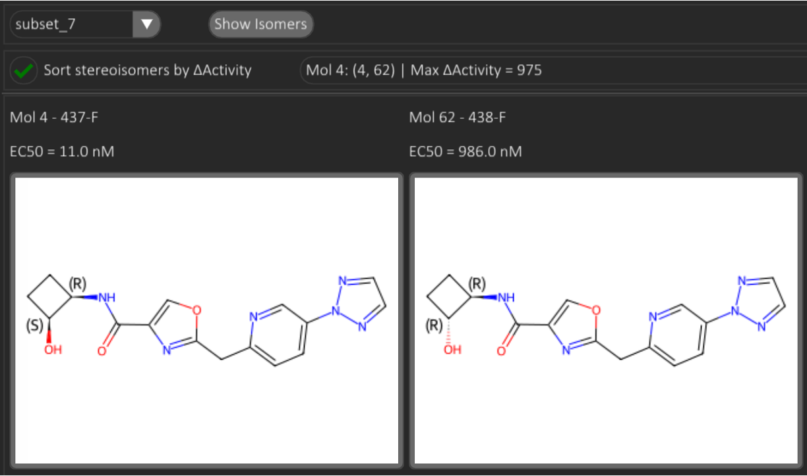

Stereoisomers Analysis
The Stereo tab enables inspection of stereoisomeric clusters detected either within a selected molecular subset or across the entire dataset. Stereoisomer groups are indexed in a combo box populated by triggering Show Isomers.
Each entry follows the schema:
MolID: [list of MolIDs in the stereoisomer group] | Max ΔActivity = value.
The ΔActivity term quantifies the largest observed bioactivity difference within the group,
expressed in nanomolar units when IC50/EC50/EC50-like measurements are used, or in the original
assay units otherwise.
The notation Mol30: [63, 30, 34, 35] | Max ΔActivity = 33 indicates that molecule 30 belongs to a stereoisomeric cluster containing four constitutional entries (Mol63, Mol34, Mol35, and Mol30 itself), with a maximal pairwise activity difference of 33 nM within the cluster. In this example, the assay type is EC50, therefore the delta metric corresponds to ΔEC50 = 33 nM.
By default, stereoisomer groups are sorted by ascending MolID. Enabling the option Sort stereoisomers by deltaValue reorders groups by descending ΔActivity magnitude, highlighting clusters with the most pronounced activity variation.
Example Analysis

In the illustrated example, subset 7 contains a stereoisomeric pair selected as Mol4: [4, 62] | Max ΔActivity = 975, positioned at the top of the ranked list (after sorting by deltaValue). The pair shares the same core topology and contains two stereocenters, differing at only one configuration site. This single stereochemical inversion, localised on an -OH substituent, produces a ~10³-fold shift in biological potency: Mol4 shows EC50 = 11 nM, whereas its epimer Mol62 displays EC50 = 986 nM, yielding ΔEC50 ≈ 975 nM.
This case exemplifies a stereochemistry-driven activity cliff, where a minimal 3D orientation change—without altering connectivity—results in an extreme bioactivity divergence, underscoring the importance of stereochemical integrity during substructure and R-group analysis whenever chirality is explicitly defined in the input representation (SMILES/SDF).